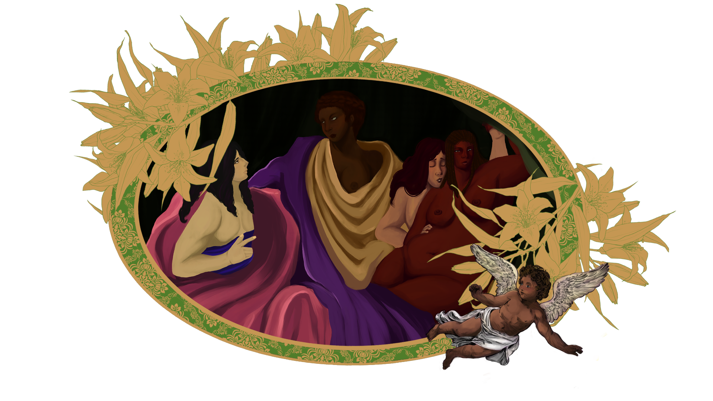

N ew Canons: An Artist Manifesto.
T he artist Leviathan Shoates has created this manuscript for understanding.
within the artist engages with things such as
saints
religion
queerness
cyberspace and digital art
this is a place to approach the recurring themes of work
these meanings are not fixed, instead exist as ongoing inquiries
nothing in this manuscript is finished
it is intended to remain as subject to change over time
as work continues to evolve
I conography is a system.
it repeats.
it defines what can be seen.
it defines what is sacred.
it constructs a canon.
this canon privileges certain bodies.
white.
gender conforming.
other bodies are excluded.
they are denied sanctity.
this absence is visible.
through queer aesthetics and intervention
disrupt the system
sacred can expand
T he saint is not singular.
it cannot exist in a singular image.
it is reworked.
it exist in multiples.
it can embody different narratives.
it's divinity is not inherent.
it becomes divine through refusal.
a saint is in a constant state of flux.
T he queer form is more than just body.
it disrupts the standard narrative.
it disrupts space and time.
it renders queer experiences visible.
it renders queer people visible.
it is made by becoming.

T he image does not remain stable.
the image does not remain stable.
through reproduction, it changes.
through reproduction, it multiples
just as saint does not stay the same
it shifts depending on context.
each time it becomes something else.
T he work exists in a digital form.
it can be altered
it can return in new forms.
there is no original state
only versions
the image continues beyond the first creation.
T he work exists in cyberspace.
for many queer individuals,
this space is the only place where one can exist.
it is sanctuary.
it is necessary.
if the works speak to queer life,
it must exist here.
it must be seen here.
T he work does not end.
this manuscript is not a conclusion.
it is a starting point.
these meanings are not fixed.
they are ongoing inquiries.
the work does not end.
to be queer is to continue.
to continue is to become.
initial construction of the manuscript.
entries will continue.